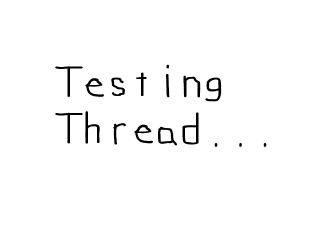

直到现在，你都在写那种一个时刻只能进行一个操作的程序。有了多线程，你就可以编写一次执行多个操作的程序。本课将向你介绍SDL跨平台的多线程能力。
#include "SDL/SDL.h" #include "SDL/SDL_image.h" #include "SDL/SDL_thread.h" #include <string>
首先，我们必须记得去包含SDL线程的头文件。
//将要被使用的线程 SDL_Thread *thread = NULL; //退出标识 bool quit = false;
这里是两个重要的全局变量。
首先我们有SDL_Thread，它是我们将要运行的线程。然后我们有"quit"变量，它通常用来作为
首先我们有SDL_Thread，它是我们将要运行的线程。然后我们有"quit"变量，它通常用来作为
main()函数的局部变量，但这次我们需要它作为全局变量。
int my_thread( void *data )
{
//当程序还未结束
while( quit == false )
{
//运行标题动画
SDL_WM_SetCaption( "Thread is running", NULL );
SDL_Delay( 250 );
SDL_WM_SetCaption( "Thread is running.", NULL );
SDL_Delay( 250 );
SDL_WM_SetCaption( "Thread is running..", NULL );
SDL_Delay( 250 );
SDL_WM_SetCaption( "Thread is running...", NULL );
SDL_Delay( 250 );
}
return 0;
}
这里是将要作为我们的线程的函数。它所做的事情是当用户没有退出时，每1/4秒设置一个不同的窗口标题。现在你可以看到为何"quit"变量需要设为全局的了。
为了让一个函数能在SDL中当作一个线程来使用，它必须满足2个条件。首先是它必须返回一个整数（int）。第二，它必须有一个指向void类型数据的指针作为参数。如果这两个条件没有全部满足，这个函数就不能被用作线程。
为了让一个函数能在SDL中当作一个线程来使用，它必须满足2个条件。首先是它必须返回一个整数（int）。第二，它必须有一个指向void类型数据的指针作为参数。如果这两个条件没有全部满足，这个函数就不能被用作线程。
//创建并运行线程
thread = SDL_CreateThread( my_thread, NULL );
在main函数里，在所有东西都初始化并加载好后，我们调用
SDL_CreateThread()。
SDL_CreateThread()将函数作为第一个参数，将它变成一个线程，然后运行这个新创建的线程。它返回一个指向这个线程的指针，所以我们可以跟踪这个线程。
//将图像应用到屏幕上
apply_surface( 0, 0, image, screen );
//更新屏幕
if( SDL_Flip( screen ) == -1 )
{
return 1;
}
//当用户还未退出
while( quit == false )
{
//当有事件需要处理
while( SDL_PollEvent( &event ) )
{
//如果用户叉掉了窗口
if( event.type == SDL_QUIT )
{
//退出程序
quit = true;
}
}
}
然后我们在屏幕上显示图像，接着等待用户退出。
当这个运行着的时候，窗口标题在我们的线程中进行变化，并且这个线程与我们当前正在运行的任务是平行地运行的。多亏了SDL的多线程能力，你可以同时做这两件事了。
当这个运行着的时候，窗口标题在我们的线程中进行变化，并且这个线程与我们当前正在运行的任务是平行地运行的。多亏了SDL的多线程能力，你可以同时做这两件事了。
void clean_up()
{
//停止线程
SDL_KillThread( thread );
//释放表面
SDL_FreeSurface( image );
//退出SDL
SDL_Quit();
}
这是我们的清理函数。
首先我们调用
首先我们调用
SDL_KillThread()立即停止线程。一般你应该等待线程完成，但在这种情况下，立即停止并不会有什么损害。然后我们释放表面并退出SDL。
当提到在游戏中使用多线程时，一般的规则是"不"。相比单线程程序，你有大量更多的事情需要处理。随着多核CPU的兴起，人们会忍不住投身于这个领域的开发。
但是，多线程在游戏中的某些地方还是很有用的。如果你是游戏开发的新手，不要使用多线程，除非当你变得更有经验了。多线程相对其价值来说，可能更是个令人头疼的问题。你必须了解线程同步（这是下面两课将要讲的内容）和处理并发。只有当你对软件架构有好的把握时，你才可以使用这个强大的工具。
但是，多线程在游戏中的某些地方还是很有用的。如果你是游戏开发的新手，不要使用多线程，除非当你变得更有经验了。多线程相对其价值来说，可能更是个令人头疼的问题。你必须了解线程同步（这是下面两课将要讲的内容）和处理并发。只有当你对软件架构有好的把握时，你才可以使用这个强大的工具。